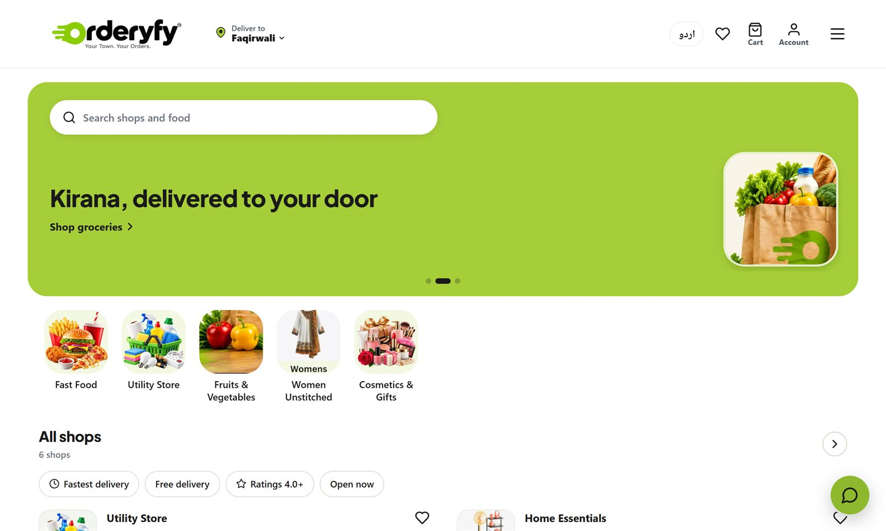
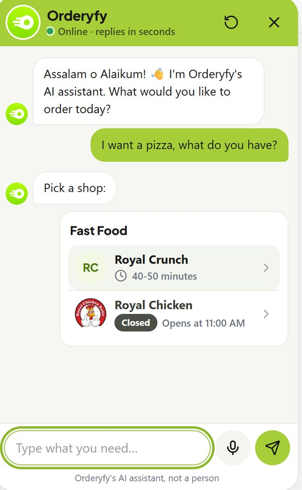
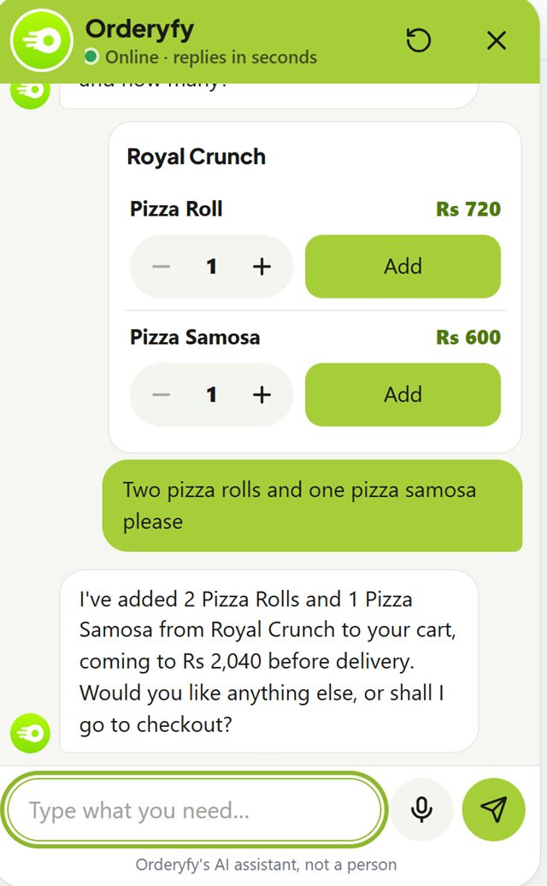

Orderyfy: food and shop delivery for one town.
A multi-vendor marketplace for Faqirwali, Pakistan. Customers, shops, riders and admins use one Laravel app, in English and Urdu. A Claude assistant takes orders in chat and puts them in the real cart.
The problem
A town with shops, riders and no delivery app.
Foodpanda doesn't cover Faqirwali. The shops are there, and so are people who can ride. What was missing was one place to order from them, with prices in rupees, Urdu on screen and cash on delivery.
- Five kinds of shop, from fast food and groceries to unstitched cloth and cosmetics.
- Orders go out to villages, so a flat delivery fee doesn't work.
- Shops, riders and the admin team each need their own tools, on a phone.
What I built
Four roles, one app.
Customer storefront, vendor panel, rider app and admin panel. One phone can switch between customer, rider and vendor modes.
Catalogue with no depth limit
Store types, then shops, then each shop's own category tree, then products with variants. Vendors import products from CSV or Excel with sizes and photos.
Fees from real roads
The delivery fee comes from road distance per km and a village rate card. Rider pay shows its km, petrol and fixed parts.
Rider flow and cash
A rider-first order flow with a wallet, drive mode, ratings, cash submissions and payouts.
A panel for each shop
Each shop is its own Filament tenant, with bulk actions, WebP photos and a weekly settlement.
Reasons to come back
Loyalty points ("you'll earn X points"), coupons, and reviews with votes and reports.
Alerts that reach locked phones
Web push for riders and kitchens. The site installs as a PWA, and customers can sign in with Google.
Urdu and voice notes
An English / Urdu picker with a right-to-left layout. Voice notes at checkout are turned into text by Gemini.
Courier pickups
Customers can ask for a parcel to be picked up from a courier office and brought to the door.
Also shipped
- A mobile field panel for a field agent, with shop visits, an admin report and Excel export.
- A Team & roles page for staff access.
- Launch-day tracking: each customer step goes to GA4, the Meta Pixel, Meta's Conversions API (hashed details, shared event id) and the site's own event log. An "Ads & visitors" page shows the funnel from visit to delivered order, by source and campaign, with staff, riders, shops and bots left out.
AI sales assistant
A Claude assistant that takes the order.
Live since 18 Oct 2026, on Claude Haiku.
It isn't a FAQ bot. It searches the real catalogue and fills the real cart. It collects name, phone, village and address in a form, shows the delivery fee, and places a guest order tagged "Chatbot".
Orderyfy assistant · sample order
Large pizza for 4, under Rs 2,500? Add one.
Added a large pizza (serves 4) for Rs 2,199. Put your name, phone and village in the form below and I'll place the order.
The form shows the delivery fee for your village before you confirm.
Sample conversations. The tool names and limits match the live code.
Its 7 tools
- search_products
- update_cart
- show_checkout_form
- show_shop_choices
- show_call_button
- ask_team
- show_courier_form
Limits around the model
- Cached prompt. The rules and a knowledge snapshot are cached. The cache key changes when the tool list's version does.
- Three ways to pause. A monthly budget ($20 by default), a cap of 30 model calls per conversation, and Anthropic's own spend limit.
- Usage meter. Every call's tokens and cost are counted, and the budget guard reads them.
- Human handoff. Questions it can't answer go to an admin inbox, with an email alert.
- Key stays private. The API key is stored encrypted and never reaches the settings page.
- Phone first. On phones it opens as a floating card.
Numbers
30 days from first commit to launch.
Counted from the repo on 12 Nov 2026. It has 200 commits from 6 Oct to 5 Nov 2026.
Screens
Real screens.



How I shipped
Small steps, each one live.
- Work was tracked as Jira tickets KAN-1 to KAN-52, and a status file logs 80 numbered steps.
- I built with Claude Code, running agents in parallel worktrees and reviewing each one's work before merging.
- The assistant step used 8 builder agents, an integrator and a review from 3 angles. The review found 15 issues, all fixed, and the full suite passed 1,487 of 1,487.
- Deploys run from a script over SSH: drift check, backup, staged upload, migrate, cache rebuild, smoke test, and rollback if anything fails.
- A GitHub Actions deploy workflow exists, kept manual on purpose.
Stack
PHP and Laravel, end to end.
- PHP 8.3
- Laravel 13
- Filament 5
- Blade
- JavaScript
- Tailwind 4
- Vite 8
- MySQL
- Spatie permission
- Spatie translatable
- Spatie media library
- Laravel Socialite
- Web Push
- PWA
- Claude API (PHP SDK)
- Gemini
- PHPUnit 12
- GA4
- Meta Conversions API
- Claude Code
- Jira